Chapitre 3 Analyse cartographique avec mapsf (new)
3.1 Introduction
L’objectif de cette section est
- d’apprendre à réaliser des cartographies statiques d’indicateurs relatifs aux unités spatiales à différentes échelles à l’aide du package
cartography. - de créer des fonctions permetant d’automatiser la tâche de cartographie à l’échelle des communes
3.1.1 Packages utilisés
Nous allons nous limiter à un nombre limité de packages
- dplyr et tidyr: pour la manipulation des tableaux et leur agrégation (inutile de charger l’ensemble du package tidyverse)
- knitr : pour afficher proprement les tableaux de résultats
- ggplot2 : pour visualiser les résultats sous formes de graphiques
- sf : pour manipuler les données cartographiques et les agréger
- mapsf : pour la réalisation de cartes statiques de qualité imprimables aux formats .pdf ou .doc. Le package mapsf remplace le package cartography dpuis le 1er avril 2021
3.2 Préparation des données
Avant de réaliser des cartes, nous devons préparer des variables, les analyser sur le plan statistique et enfin effectuer leur jointure avec le fonds de carte pour obtenir un objet de type sf (spatial features)
3.2.1 Chargement des fichiers de référence
Nous avons besoin uniquement de trois fichiers
- Le fichier des individus
- le fichier des métadonnées relatives aux individus
- le fonds de carte des IRIS
3.2.2 Choix d’un indicateur
Nous allons prendre comme exemple l’analyse d’un tableau du nombre d’automobiles par ménage en nous limitant aux ménages ordinaires c’est-à-dire en excluant les personnes habitant dans des logements collectifs (pensionnats, prisons, congrégations religieuses, …)
Nous ne conservons que les individus chefs de ménages (LPRM=1) ce qui va logiquement éliminer les individus présents dans les ménages non ordinaires (LPRM=Z) ainsi que tous les membres d’un logement qui ne sont pas chefs de ménages.
3.2.3 Création du tableau de contingence
Nous souhaitons ventiler les ménages en fonction de leur localisation géographique (IRIS) et de leur nombre d’automobile (VOIT) en tenant compte de leur poids (IPONDI) puisque les données sont issues d’uin échantillonage qu’il faut redresser.
Cette opération se réalise très facilement à l’aide du package dplyr à l’aide des fonctions group_by, mutate et summarize :
`summarise()` regrouping output by 'IRIS' (override with `.groups` argument)tibble [2,070 × 3] (S3: tbl_df/tbl/data.frame)
$ IRIS : Factor w/ 4243 levels "751010101","751010102",..: 3300 3300 3300 3300 3301 3301 3301 3301 3302 3302 ...
$ VOIT : Factor w/ 5 levels "0","1","2","3",..: 1 2 3 4 1 2 3 4 1 2 ...
$ nbmen: num [1:2070] 674.1 679.5 142.2 29.5 801.4 ...# A tibble: 5 x 3
IRIS VOIT nbmen
<fct> <fct> <dbl>
1 940020101 0 674.
2 940020101 1 679.
3 940020101 2 142.
4 940020101 3 29.5
5 940020102 0 801. Le résultat est un tibble au format “long” qui comporte 4 lignes différentes pour chaque IRIS, correspondant aux nombres de ménages ayant respectivement 0, 1, 2 et 3 voitures ou plus.
Nous allons transformer ce tableau en format “large” pour placer côte à côte les différentes modalités du nombre de voitures. Pour cela il faut utiliser la fonction pivot_widerdu package tidyr.
library(tidyr)
tabcont <- tab %>% pivot_wider(names_from = VOIT,
values_from = nbmen,
names_prefix = "MEN_VOIT",
values_fill = 0)
head(tabcont)# A tibble: 6 x 5
IRIS MEN_VOIT0 MEN_VOIT1 MEN_VOIT2 MEN_VOIT3
<fct> <dbl> <dbl> <dbl> <dbl>
1 940020101 674. 679. 142. 29.5
2 940020102 801. 903. 170. 24.8
3 940020103 661. 703. 76.0 10.6
4 940020104 694. 701. 126. 23.0
5 940020105 434. 960. 237. 29.3
6 940020106 625. 735. 166. 29.2Grâce à cette transformation, nous disposons maintenant pour chaque IRIS de la distribution des ménages en fonction de leur nombre de voitures, ce qui constitue le tableau de contingence recherché.
3.2.4 Création d’un tableau de pourcentages en ligne
Nous allons maintenant calculer le nombre total de ménage puis en déduire la proportion de ménages en fonction de leur nombre d’automobile pour chacun des IRIS.
tabdon <- tabcont %>% mutate (MEN_TOTAL = MEN_VOIT0+MEN_VOIT1+MEN_VOIT2+MEN_VOIT3,
PCT_VOIT0 = 100* MEN_VOIT0 / MEN_TOTAL,
PCT_VOIT1 = 100* MEN_VOIT1 / MEN_TOTAL,
PCT_VOIT2 = 100* MEN_VOIT2 / MEN_TOTAL,
PCT_VOIT3 = 100* MEN_VOIT3 / MEN_TOTAL)
head(tabdon[,c(1,6:10)]) # A tibble: 6 x 6
IRIS MEN_TOTAL PCT_VOIT0 PCT_VOIT1 PCT_VOIT2 PCT_VOIT3
<fct> <dbl> <dbl> <dbl> <dbl> <dbl>
1 940020101 1525. 44.2 44.5 9.32 1.93
2 940020102 1899. 42.2 47.6 8.93 1.31
3 940020103 1450. 45.6 48.5 5.24 0.729
4 940020104 1544. 45.0 45.4 8.14 1.49
5 940020105 1660. 26.1 57.8 14.3 1.76
6 940020106 1555. 40.2 47.3 10.7 1.87 3.2.5 Estimation du nombre moyen d’automobile par menages
Il n’est pas possible d’estimer le nombre exact d’automobile par ménage car l’INSEE ne détaille pas la catégorie VOIT = 3 qui correspond à “Trois automobiles ou +”. On peut néanmoins procéder à une estimation minimale du nombre d’automobile en supposant que les ménages de ce type ont exactement rois automobiles. On en déduit alors le nombre total d’automobile par IRIS (VOIT_TOTAL) et le nombre moyen d’automobile par ménage (VOIT_MEN).
tabdon <-tabdon %>% mutate(VOIT_TOTAL = MEN_VOIT1 + 2*MEN_VOIT2 + 3*MEN_VOIT3,
VOIT_MEN = VOIT_TOTAL / MEN_TOTAL)
head(tabdon[,c(1,6,11,12)])# A tibble: 6 x 4
IRIS MEN_TOTAL VOIT_TOTAL VOIT_MEN
<fct> <dbl> <dbl> <dbl>
1 940020101 1525. 1052. 0.690
2 940020102 1899. 1317. 0.694
3 940020103 1450. 886. 0.611
4 940020104 1544. 1021. 0.662
5 940020105 1660. 1522. 0.917
6 940020106 1555. 1154. 0.7423.2.6 Analyse statistique des vraiables
Avant de passer à la cartographie, on peut analyser quelques variables intéressantes.
3.2.6.1 Part des ménages sans automobiles
Les ménages sans automobiles sont une catégorie intéressante, même si elle peut recouper des situations très diverses (étudiants, personnes âgées, pauvres, …).
Min. 1st Qu. Median Mean 3rd Qu. Max.
0.00 21.94 30.95 31.13 40.84 65.31 ggplot(tabdon, aes(x=PCT_VOIT0)) +
geom_histogram(bins=20, fill="gray30") +
scale_y_continuous("Nombre d'IRIS")+
scale_x_continuous("% de ménages")+
ggtitle("Par des ménages sans automobiles en 2017")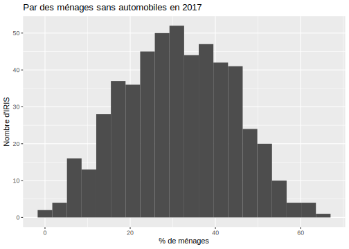
La distribution apparaît très variable puisque les ménages sans automobiles sont absents de certains IRIS alors qu’ils représentent plus de la moitié des ménages dans d’autres IRIS.
3.2.6.2 Nombre moyen d’automobiles par ménage
Même s’il est légèrement sous-estimé, le nombre d’automobile par ménage est un bon indicateur de la dépendance de certains logements mals desservis par les transports en commun.
Min. 1st Qu. Median Mean 3rd Qu. Max.
0.3944 0.7190 0.8675 0.9003 1.0458 2.0000 ggplot(tabdon, aes(x=VOIT_MEN)) +
geom_histogram(bins=20, fill="gray30") +
scale_y_continuous("Nombre d'IRIS")+
scale_x_continuous("voitures / ménage")+
ggtitle("Nombre moyen d'automobile par ménage en 2017")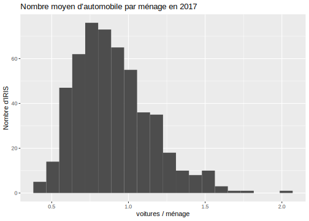
Alors qu’on trouve en général entre 0.6 et 1.2 automobiles par ménage, certains IRIS affichent des valeurs moyennes de 1.5 à 2 automobiles par ménage.
3.2.7 Jointure avec le fonds de carte
On commence par effectuer une sauvegarde simple de notre tableau statistique
Puis on effectue une jointure avec le fonds de carte map_iris et on réalise une sauvegarde sous un autre nom.
Joining, by = "CODE_IRIS"3.3 Le package mapsf
Le package mapsf permet de réaliser des cartes statiques de très haute qualité. Il a en effet été mis au point par des cartographes et des géomaticiens professionnels de l’UMS RIATE. Il prend la suite du package cartography dont la maintenance demeurera assuré quelque temps encore mais ne fera plus l’objet de développements futurs. Le package mapsf présente l’avantage d’être totalement compatibvle avec le package sf ce qui n’était pas autant le cas pour le package cartography, plus ancien, et créé pour être compatible avec l’ancien package sp.
On trouvera la documentation du package mapsf à l’adresse suivante :
https://riatelab.github.io/mapsf/index.html
3.3.1 Création d’un template cartographique
Nous allons dans un premier temps apprendre à créer un fonds de carte vierge mais comportant tout l’habillage nécessaire (“template”). Pour cela nous allons charger différentes couches cartographiques correspondant respectivement au département, aux communes et aux iris :
map_dep <- readRDS("data/map_dep.Rdata")
map_com <- readRDS("data/map_com.Rdata")
map_iris <- readRDS("data/map_iris.Rdata")https://riatelab.github.io/mapsf/articles/mapsf.html
3.3.1.1 tracé d’un fonds de carte
La fonction mf_map() avec le paramètre type = "base"permet de tracer une carte vide
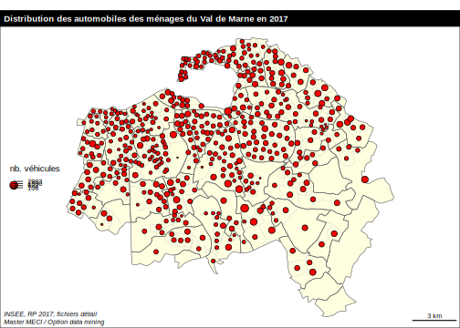
3.3.1.2 Superposition de couches
On peut toutefois ajouter toute une série de paramètres supplémentaire (col=, border=, lwd=, …) et superposer plusieurs fonds de carte avec le paramètre add = TRUE. L’ajout de la fonction layout permet de rajouter un cadre une légende.
#library(mapsf)
# Trace les Iris avec des paramètres
mf_map(map_iris,
type = "base",
col = "lightyellow",
border="gray80",
lwd=0.3)
# Ajoute les contours des communes
mf_map(map_com,
type = "base",
col = NA,
border="red",
lwd=1,
add = TRUE)
# Ajoute un cadre, un titre et des sources
mf_layout(title = "Val de Marne",
credits = "Sources : IGN et INSEE")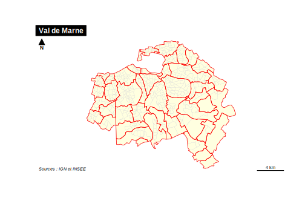
3.3.1.3 Ajout d’un thème
On peut finalement modifier l’ensemble de la carte en lui ajoutant une instruction mf_theme() qui peut reprendre des styles existants ( “default”, “brutal”, “ink”, “dark”, “agolalight”, “candy”, “darkula”, “iceberg”, “green”, “nevermind”, “jsk”, “barcelona”) mais aussi créer ses propres thèmes
#library(mapsf)
mf_theme("candy")
# Trace les Iris avec des paramètres
mf_map(map_iris,
type = "base",
col = "lightyellow",
border="gray80",
lwd=0.3)
# Ajoute les contours des communes
mf_map(map_com,
type = "base",
col = NA,
border="red",
lwd=1,
add = TRUE)
# Ajoute un cadre, un titre et des sources
mf_layout(title = "Val de Marne",
frame = TRUE,
credits = "Sources : IGN et INSEE")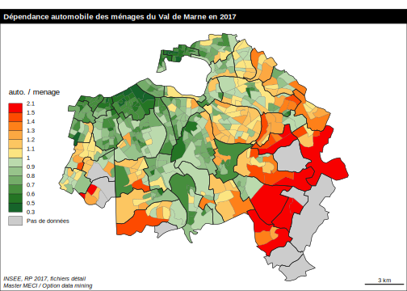
3.3.1.4 Ajout de texte
On peut ajouter une couche de texte avec la fonction mf_label(). Par exemple, on va ajouter à la carte précédente le nom des communes
#library(mapsf)
mf_theme("candy")
# Trace les Iris avec des paramètres
mf_map(map_iris,
type = "base",
col = "lightyellow",
border="gray80",
lwd=0.3)
# Ajoute les contours des communes
mf_map(map_com,
type = "base",
col = NA,
border="red",
lwd=1,
add = TRUE)
# Ajoute les contours des communes
mf_label(map_com,
var="NOM_COM",
cex=0.4,
overlap = FALSE)
# Ajoute un cadre, un titre et des sources
mf_layout(title = "Communes et Iris du Val de Marne en 2017",
frame = TRUE,
credits = "Sources : IGN et INSEE")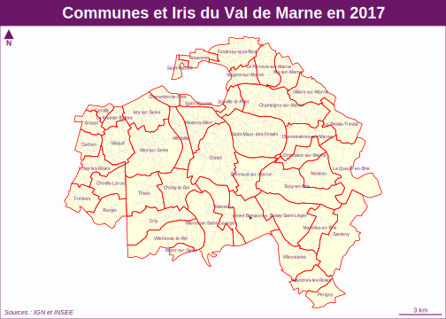
3.3.2 Carte de stock
Une carte de stock représente la localisation de quantités que l’on peut aditionner et dont le total a un sens. Par exemple un nombre d’habitants, un nombre de ménages, un nombre d’automobiles. Ce quantités doivent être représentées par des figures (cercles, carrés, …) dont la surface est proportionelle au stock afin que l’oeil du lecteur puisse les aditionner visuellement.
Dans le package map_sf, on réalise ce type de carte à l’aide de la fonction mf_map()en lui donnant le paramètre type="prop".
On va tenter à titre d’exemple de représenter la distribution du nombre de voitures par IRIS :
3.3.2.1 Carte minimale
Les instructions minimales sont les suivantes :
map_com<-readRDS("data/map_com.Rdata")
map_iris<-readRDS("data/map_VOIT_IRIS.Rdata")
# Trace les contours des communes
mf_map(x= map_iris,
type = "base")
# Ajoute le nombre de ménages par IRIS
mf_map(x =map_iris,
type ="prop",
var = "VOIT_TOTAL",
add=TRUE
)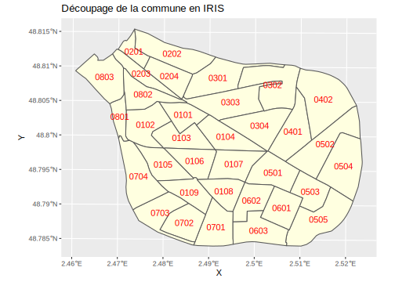
Mais le résultat est peu satisfaisant car les cercles sont trop grands. Il faut en pratique toujours effectuer un réglage de ceux-ci avec l’instruction inches=
3.3.2.2 Carte habillée
map_com<-readRDS("data/map_com.Rdata")
map_iris<-readRDS("data/map_VOIT_IRIS.Rdata")
mf_theme("candy")
# Trace les Iris avec des paramètres
mf_map(map_iris,
type = "base",
col = "lightyellow",
border="gray80",
lwd=0.3)
# Ajoute les contours des communes
mf_map(map_com,
type = "base",
col = NA,
border="black",
lwd=1,
add = TRUE)
# Ajoute les cercles proportionnels
mf_map(
x =map_iris,
var = "MEN_TOTAL",
type = "prop",
inches = 0.04,
col = "red",
leg_pos = "left",
leg_title = "Nombre de voitures",
add=TRUE
)
# Ajoute un cadre, un titre et des sources
mf_layout(title = "Distribution des voitures du Val de Marne en 2017",
frame = TRUE,
credits = "Sources : IGN et INSEE")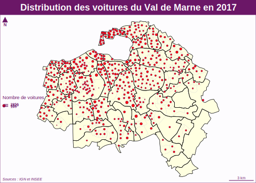
3.3.3 Carte d’intensité (choroplèthe)
Une carte d’intensité représente un phénomène relatif dont la somme n’a pas de sens. Par exemple, il serait absurde d’aditionner les nombres d’automobiles par habitant des IRIS du Val de Marne. Ces variables d’intensité caractèrisent donc l’état général d’une zone (choros) at elles vont être représentées par une couleur appliquée à toute la surface de la zone, d’où leur nom de cartes choroplèthes.
La fonction du package mapsf adaptée aux variables d’intensité est la fonction mf_map()munie du paramètre type = "choro".
On va prendre l’exemple du nombre de voitures par ménage.
3.3.3.1 Carte minimale
Si on ne précise rien, la carte est réalisée à l’aide de la palette par défaut avec un découpage des classes en quantiles (effectifs égaux).
map_iris<-readRDS("data/map_VOIT_IRIS.Rdata")
# Carte choroplèthe
mf_map(
x = map_iris,
var = "VOIT_MEN",
type = "choro"
)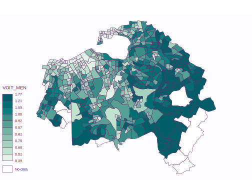
3.3.3.2 Carte avec habillage
On peut arriver à une carte beaucoup plus satisfaisante en contrôlant l’ensemble des paramètres de couleur et de découpage des classes. Puis en superposant les contours de communes au dessus de la carte des IRIS pour faciliter le repérage.
map_com<-readRDS("data/map_com.Rdata")
map_iris<-readRDS("data/map_VOIT_IRIS.Rdata")
# Choisit les classes
mybreaks = c(0.3,0.5, 0.6,0.7,0.8,0.9, 1,1.1, 1.2,1.3,1.4,1.5,2.1)
# Crée une palette
mypal <- mf_get_pal(n = c(6, 6), pal = c("Greens", "Reds"))
# Trace la carte choroplèthe
mf_map(
x = map_iris,
var = "VOIT_MEN",
type = "choro",
breaks = mybreaks,
pal = mypal,
border="white",
col_na = "gray80",
leg_title = "voiture/ménage"
)
# Ajoute les contours des communes
mf_map(map_com,
type = "base",
col = NA,
border="black",
lwd=1,
add = TRUE)
# Ajoute un cadre, un titre et des sources
mf_layout(title = "Dépendance automobile dans le Val de Marne en 2017",
frame = TRUE,
credits = "Sources : IGN et INSEE")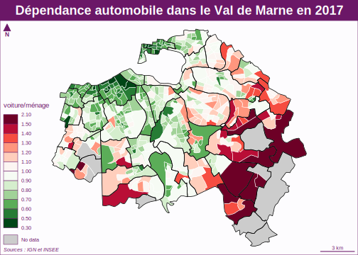
3.3.4 Carte de stock + intensité
On peut combiner les deux modes cartographiques. Prenons à titre d’exemple le cas des ménages ayant trois automobiles ou plus. Onn peut décrire ce phénomène soit en terme de stock, soit en termes d’intensité.
Min. 1st Qu. Median Mean 3rd Qu. Max. NA's
0.00 12.50 21.42 26.20 33.77 145.76 9 Min. 1st Qu. Median Mean 3rd Qu. Max. NA's
0.000 1.170 1.943 2.510 3.160 16.114 9 On réalise les deux cartes successivement en commençant par la carte de taux puis en lui ajoutant la carte de stock par dessus.
map_com<-readRDS("data/map_com.Rdata")
map_iris<-readRDS("data/map_VOIT_IRIS.Rdata")
# Choisit les classes
# Trace la carte choroplèthe
mf_map(
x = map_iris,
var = "PCT_VOIT3",
nbreaks = 5,
type = "choro",
border="white",
col_na = "gray80",
lwd=0.3,
leg_title = "% ménages"
)
# Ajoute les cercles proportionnels
mf_map(
x =map_iris,
var = "MEN_VOIT3",
type = "prop",
inches = 0.04,
col = "red",
leg_pos = "right",
leg_title = "Nb ménages",
add=TRUE
)
# Ajoute les contours des communes
mf_map(map_com,
type = "base",
col = NA,
border="white",
lwd=1,
add = TRUE)
# Ajoute un cadre, un titre et des sources
mf_layout(title = "Les ménages ayant trois voitures et plus 2017",
frame = TRUE,
credits = "Sources : IGN et INSEE")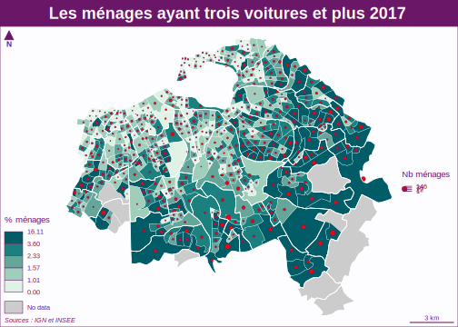
3.4 Création de fonctions
L’objectif de cette section est de préparer des fonctions de cartographie qui pourront être intégrés dans une application shiny. On va pour cela reprendre les fonctions mises au point dans la partie statistiques et les coupler avec des procédures de cartographie. On se limitera dans l’immédiat à l’emploi des packages sfet cartography,mais on pourra par la suite créer d’autres fonctions fondées sur des packages tels que leaflet, plotlyou tmap…
3.4.1 fonction tab_cont_iris()
On va prendre comme point de départ la création d’un tableau de contingence spatial c’est-à-dire un tableau dont les lignes correspondent aux IRIS d’une commune et les colonnes aux modalités d’une variable de type factor.
On récupère les fonctions statistiques mises au point précédemment
On charge le fichier de données en lui ajoutant la variable LPRM_1 dont nous aurons besoin pour distinguer les données par ménage et pour l’ensemble de la population.
3.4.1.1 création du tableau avec la fonction tab_var2
3.4.1.2 pivotage du tableau
On opére deux opérations de pivotage du tableau pour récupérer les valeurs brutes (raw) et les valeurs en % (pct).
tab_raw <- pivot_wider(data = tab %>% select(-pct),
names_from = VOIT,
values_from = n,
values_fill = 0)
names(tab_raw)[-1] <- paste("count_",names(tab_raw)[-1], sep="")
tab_pct <- pivot_wider(data = tab %>% select(-n),
names_from = VOIT,
values_from = pct,
values_fill = 0)
names(tab_pct)[-1] <- paste("pct_",names(tab_pct)[-1], sep="") 3.4.1.3 Ajout de la géométrie
On fusionne les deux tableaux précédents et bon effectue la jointure avec le fonds de carte, ce qui suppose de renommer la variable IRIS en CODE_IRIS.
tab_geo <- left_join(tab_raw, tab_pct) %>%
rename(CODE_IRIS=IRIS) %>%
left_join(map_iris) %>%
st_as_sf()Joining, by = "IRIS"Joining, by = "CODE_IRIS"3.4.1.4 Création d’une fonction unique
On reprend les étapes précédentes pour en faire une fonction unique appelée tab_cont_irisqui prend en entrée une variable quelconque de type factor et produit en sortie le tableau de contingence spatial soit par individu, soit par ménages.
tab_cont_iris <- function(data, map, listcom, menag, var)
{
# Create tab
tab <-tab_var2(data, listcom, menag, {{var}}, IRIS)
# Pivot count
tab_raw <- pivot_wider(data = tab %>% select(-pct),
names_from = {{var}},
values_from = n,
values_fill = 0)
names(tab_raw)[-1] <- paste("count_",names(tab_raw)[-1], sep="")
# Pivot pct
tab_pct <- pivot_wider(data = tab %>% select(-n),
names_from = {{var}},
values_from = pct,
values_fill = 0)
names(tab_pct)[-1] <- paste("pct_",names(tab_pct)[-1], sep="")
# join with geom
tab_geo <- left_join(tab_raw, tab_pct) %>%
rename(CODE_IRIS=IRIS) %>%
left_join(map) %>%
st_as_sf()
return(tab_geo)
}3.4.1.5 Test de la fonction
On peut tester la fonction sur la variable SEXE en effectuant un comptage :
- soit pour la population totale en prenant menag = FALSE
Joining, by = "IRIS"Joining, by = "CODE_IRIS"# A tibble: 3 x 12
CODE_IRIS count_1 count_2 pct_1 pct_2 INSEE_COM NOM_COM IRIS NOM_IRIS
<chr> <dbl> <dbl> <dbl> <dbl> <chr> <chr> <chr> <chr>
1 940710101 1094 1057 50.9 49.1 94071 Sucy-e… 0101 Le Gran…
2 940710102 1056 1148 47.9 52.1 94071 Sucy-e… 0102 La Foss…
3 940710103 1329 1515 46.7 53.3 94071 Sucy-e… 0103 La Cite…
# … with 3 more variables: TYP_IRIS <chr>, geometry <MULTIPOLYGON [m]>,
# DEPT <chr>- soit pour les chefs de ménage en prenant menag = TRUE
Joining, by = "IRIS"Joining, by = "CODE_IRIS"# A tibble: 3 x 12
CODE_IRIS count_1 count_2 pct_1 pct_2 INSEE_COM NOM_COM IRIS NOM_IRIS
<chr> <dbl> <dbl> <dbl> <dbl> <chr> <chr> <chr> <chr>
1 940710101 474 338 58.4 41.6 94071 Sucy-e… 0101 Le Gran…
2 940710102 411 411 50 50 94071 Sucy-e… 0102 La Foss…
3 940710103 553 496 52.7 47.3 94071 Sucy-e… 0103 La Cite…
# … with 3 more variables: TYP_IRIS <chr>, geometry <MULTIPOLYGON [m]>,
# DEPT <chr>3.4.2 fonction map_count_iris
Nous allons créer différentes fonctions de cartographie selon que la variable à représenter est un stock (count_x) ou une intensité (pct_xx).
Dans l’immédiat nous allons nous limiter aux fonctions de base du package cartographymais ou pourra par la suite proposer d’autres solutions.
3.4.2.1 Objectifs
On prend comme entrée un tableau de contingence spatial et on décide de représenter l’une des modalités de type count. Soit par exemple la modalité 3 de la variable VOIT mesurée en nombre de ménages
Joining, by = "IRIS"Joining, by = "CODE_IRIS"3.4.2.2 Fonction minimale
On va maintenant créer une fonction ayant autant de paramètres que nécessaire pour pouvoir s’appliquer à n’importe quelle modalité de n’importe quelle variable. La fonction minimale devra comporter 6 paramètres
map_count_iris <- function (data,
map,
listcom,
menag,
var,
mod,
titre)
{
mymap<-tab_cont_iris(data,map_iris,listcom,menag,{{var}})
myvar <- paste("count_",mod, sep="")
if (menag==FALSE) {myleg = "nb. d'habitants"} else
{myleg = "nb de ménages"}
mf_map(x= mymap,
type = "base",
col="lightyellow",
border="gray80",lwd=0.4)
mf_map(x = mymap,
var = myvar,
type = "prop",
col="blue",
leg_title = myleg,
inches = 0.06)
mf_layout(title = titre,
frame = TRUE,
credits ="INSEE, RP 2017, fichiers détail")
}On teste la fonction sur les ménages ayant plus de trois voitures à Sucy-en-Brie
map_count_iris(data = RP,
map = map_iris,
listcom = "94071",
menag= TRUE,
var = VOIT,
mod = 3,
"Ménages avec trois voitures ou plus")Joining, by = "IRIS"Joining, by = "CODE_IRIS"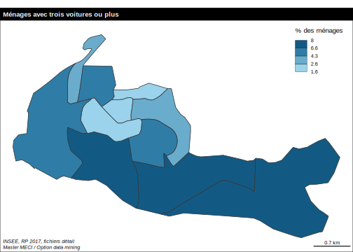
On vérifie qu’elle marche également si on ajoute les communes voisines de Saint-Maur-des-Fossés (94068) , Bonneuil (94011), Ormesson (94055), Chennevières (94019) et Noiseau (94053)
map_count_iris(data = RP,
map = map_iris,
listcom = c("94071","94068","94011","94055", "94019"),
menag= TRUE,
var = VOIT,
mod = 3,
"Ménages avec trois voitures ou plus")Joining, by = "IRIS"Joining, by = "CODE_IRIS"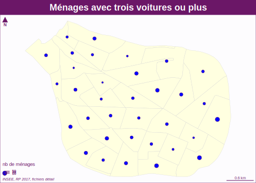
… ou bien sur une autre modalité d’une autre variable. Par exemple la distribution des ménages dont la personne de référence est ouvrier.
map_count_iris(data = RP,
map = map_iris,
listcom = c("94071","94068","94011","94055", "94019"),
menag= TRUE,
var = CS1,
mod = 6,
"Ménages ouvriers en 2017")Joining, by = "IRIS"Joining, by = "CODE_IRIS"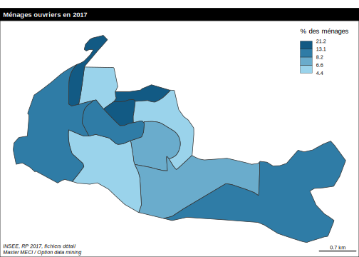
3.4.2.3 Fonction améliorée
Vous pouvez maintenant améliorer la fonction en lui ajoutant d’autres paramètres variables tels que :
- la couleur de remplissage des cercles
- la couleur d’arrière-plan des iris
- le zoom d’aggrandissement des cercles
- etc.
3.4.3 fonction map_pct_iris
Nous allons maintenant préparer un pogramme pour cartographier une variable d’intensité (pct_xx) dont la somme n’a pas de sens et qui doit donc utiliser le mode cartographique zonal (carte choroplèthe).
3.4.3.1 Objectifs
On prend comme entrée le tableau de contingence spatial qui a été transformé en profil en ligne avec des modalités de type pct. Comme nous allons devoir établir automatiquement des classes sans connaître la forme de la distribution, nous devons utiliser une solution robuste.
- La méthode des quantiles apparaît alors comme la plus adaptée puisqu’elle consiste à découper la distribution en classes d’effectifs égaux.
- Concernant le nombre de classes, il doit dépendre du nombre d’éléments (ici d’IRIS) et nous allons utiliser pour cela la formule de Huntsberger qui indique le nombre maximum de classes souhaitable (K) en fonction du nombre d’élément (n).
\(K = 1 + \frac{10}{3}.log_{10}(x)\)
3.4.3.2 Fonction minimale
On va maintenant créer une fonction ayant autant de paramètres que nécessaire pour pouvoir s’appliquer à n’importe quelle modalité de n’importe quelle variable. La fonction minimale devra comporter 7 paramètres
map_pct_iris <- function ( data,
map,
listcom,
menag,
var,
mod,
titre)
{
mymap<-tab_cont_iris(data,map,listcom,menag,{{var}})
myvar <- paste("pct_",mod, sep="")
if (menag==FALSE) {myleg = "% des habitants"} else
{myleg = "% des ménages"}
huntsberger <- function(x) {round(1+(10/3)*log10(x))}
nbc<-huntsberger(nrow(mymap))
mf_map(x = mymap,
var = myvar,
type = "choro",
nbreaks = nbc,
leg_title = myleg)
mf_layout(title = titre,
frame = TRUE,
credits ="INSEE, RP 2017, fichiers détail")
}On teste la fonction sur les ménages ayant plus de trois voitures à Sucy-en-Brie
map_pct_iris(data = RP,
map= map_iris,
listcom = "94071",
menag = "1",
var = VOIT,
mod = 3,
"Ménages avec trois voitures ou plus")Joining, by = "IRIS"Joining, by = "CODE_IRIS"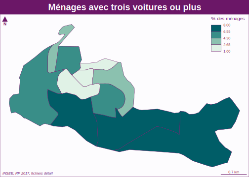
On vérifie qu’elle marche également sur un groupe de communes
map_pct_iris(data = RP,
map = map_iris,
listcom = c("94071","94068","94011","94055", "94019"),
menag= TRUE,
var = VOIT,
mod = 3,
"Ménages avec trois voitures ou plus")Joining, by = "IRIS"Joining, by = "CODE_IRIS"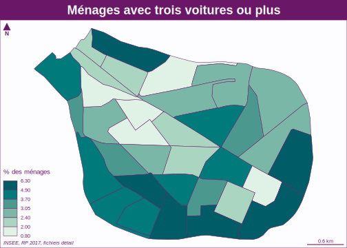
… ou bien sur une autre modalité d’une autre variable. Par exemple la distribution des ménages dont la personne de référence est ouvrier à Sucy-en-Brie
map_pct_iris(data = RP,
map = map_iris,
listcom = c("94071","94068","94011","94055", "94019"),
menag= TRUE,
var = CS1,
mod = 6,
"Ménages ouvriers en 2017")Joining, by = "IRIS"Joining, by = "CODE_IRIS"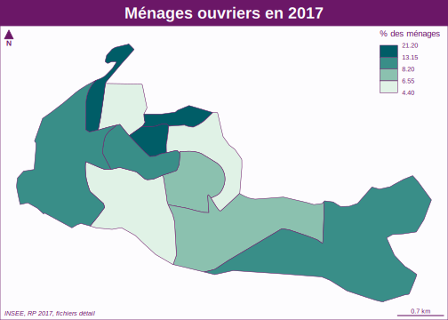
3.4.3.3 Fonction améliorée
Vous pouvez maintenant améliorer la fonction en lui ajoutant d’autres paramètres variables tels que :
- la palette de couleur
- le nombre de classes
- le mode de découpage des classes
- etc.
3.4.4 Sauvegarde des fonctions
On sauvegarde les nouvelles fonctions dans un nouveau fichier mes_fonctions_V4.R qui comporte les fonctions statistiques précédents et les nouvelles fonctions cartographiques mises au point dans ce chapitre.